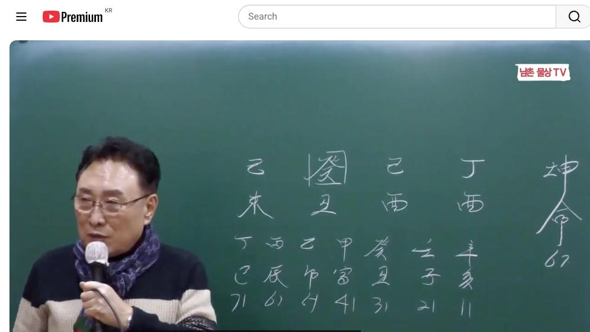
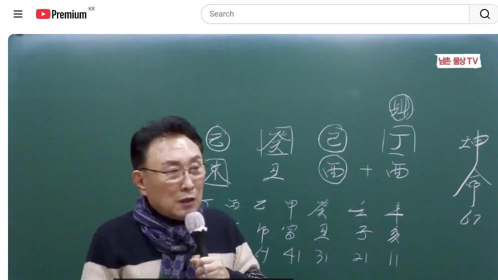
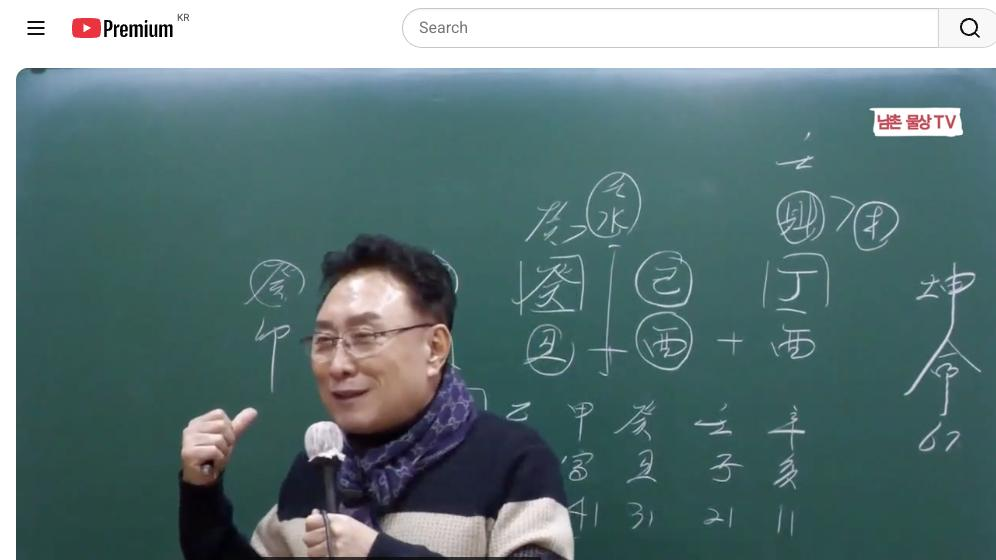

남촌물상TV 전체 문서 › 동영상 V0031
[실전사례]9 감히 두 번 결혼한 여자의 로맨스 상담문의 : 010-3139-6645

| 문서 번호 | V0031 (동영상) |
|---|---|
| 영상 URL | https://www.youtube.com/watch?v=p9PhwSgqOPM |
| 영상 ID | p9PhwSgqOPM |
| 게시일 | 2023-12-14 |
| 길이 | 24:52 (1492초) |
| 조회수 | 1,249회 (수집 시점 기준) |
| 카테고리 | Howto & Style |
| 자막 | ko (자동생성) |
| 수집 시각 | 2026-08-30 17:03 (KST) |
영상 설명 (YouTube 설명 원문 그대로)
두 번 결혼해야 하는 여자의 로맨스 #실전사례 #로맨스 #두번결혼
전체 자막 (519구간 · 타임스탬프 클릭 시 해당 장면으로 이동)
[0:01][음악]
[0:05]지금 이제 오늘 그 밴드의
[0:08]사주풀이는 그 중국의 교포 사주입니다
[0:11]그래서
[0:14]67세인 정유 기유 계축 기미 자
[0:17]이런 사주들이 거의 이제 간으로
[0:20]구성이 돼 있다시피 하죠 그 은간
[0:23]양관을 양동이 통이다 그렇게 하는데
[0:26]이런 사주를 눈에 씻게 들으셔야 돼요
[0:29]여러분들이 쉽 볼 수 있냐 하면은
[0:32]일단 계축일주 아니에요 계축일주 항시
[0:35]계축 일수는 뭘 염두해야 돼요 탁수
[0:39]염두해야 되잖아요 탁수 탁수가 되면은
[0:43]계축 단점이 탁수 그래요 물은 흙하고
[0:48]다수인데 자 관이 기토가 두 개 있죠
[0:51]이렇게 자 관이 여기도 있고 여기도
[0:55]기토가 있어요 그러면이 사람의 삶을
[0:58]보면 여자한테 사주니까 첫째 중요한
[1:01]것은 남자의 관계가 제일 중요하죠
[1:04]그럼 이제 관이 기토가 두 개
[1:06]있으니까
[1:07]하 두 번 나무를 심을 수 있겠네
[1:10]얼른 생각할 수 있어요 두 번 남을
[1:12]수 있겠네 근데
[1:14]사주에이 기토의 나무를 심지 않으면
[1:17]물은 탁수가 돼 있는 거예요 자
[1:20]그러니까 관이 탁수 있다고 보면은
[1:23]남자 관계 소 결혼에서 삶의 남편의
[1:26]관계는 반드시 문제가 있겠다고 생각할
[1:30]수가 있죠 간단하게 여러분 느낄 수
[1:32]있어야 돼 자 그러니까 아 이주는
[1:35]지금 잘 살고 계십니까 한번 딱
[1:37]던져요음 쉽게해서 잘 살고 계시냐
[1:40]당연히 못 살고
[1:42]계셔요 이렇게 생각이
[1:44]들겠죠 자 그러면
[1:47]어 이럴 때 여러분들이 판단한 방법이
[1:50]있어야 돼 똑같은 관의 뿌리가 뭔가를
[1:54]먼저 보시라 그 말이에요 그럼 자
[1:57]첫째 번 결혼한 남자의이 기토는
[2:00]유금을 깔고 있죠 자 그럼 목에
[2:03]뿌리가 될까요 안
[2:05]될까요 자 안 되죠 자 그다음에 시에
[2:09]있는 미토는
[2:11]미토는 자 목의 뿌리를 만들 수
[2:15]있어요 없어요 있어요 있잖아요 아
[2:18]그러니까 너 한 번 실패하고 두 번째
[2:20]잘 사러 하는 얘기도 얼른 눈에
[2:21]들어오셔야 돼 가장 쉽게 사주를 볼
[2:25]수 있는 걸
[2:26]가지고 여러분들이 그걸 이해를 빨리
[2:29]못 하시니까 어렵게 느껴지고 그렇게
[2:32]되는 겁니다 그니까 이런 사람 상대
[2:35]말하게 참
[2:37]괜찮아요 자 계축 일주의
[2:42]특성이라는게 물은 항시 맑아야 되고
[2:46]물은 항시 맑아야 되고 물을 만들 수
[2:49]있는 원천적인 근근 저수지가 있어야
[2:53]수원지가 그래서 여기 이제 금이라는
[2:56]것은 지지에 유금이 금생수 수 있는여
[3:00]이제 물을 만들 수 있다 그것은 내가
[3:02]하는 행위죠 뭘 할 거냐 그러 아 나
[3:05]그 행위 할 수 있어 이게 이제
[3:07]근본적으로이 사람이 하는 행위
[3:09]아닙니까 그러니까 어렵게 하나 그러면
[3:12]자 우리가
[3:15]어디에서 목을 만들 수 있는가 자
[3:18]보면 볼까요 자 그럼 여기에서
[3:21]저이이 기토의 갑목을 부를 수 있수
[3:23]없어요요 자 있죠 자 그러면 여기서
[3:27]불러줄 수 없어요 요것도 있잖아요
[3:31]그러면 관에서 관을 불러온다 한번
[3:34]여러분 생각해 떨까요 관에서 관을
[3:37]불러와 관의 관 자
[3:41]좋습니다
[3:43]그러면 쉽게 얘기해서 내 남편인
[3:46]기토가 기토가 스스로 행위를 하지
[3:50]않으면 깨지는 거죠 그러지
[3:53]않겠어요 자 그 말은 무슨
[3:56]얘기냐 기토 스스로 내 을 불러다
[4:00]심을 수 있는 사람이 있냐
[4:04]아니냐지 그렇잖아 간단하잖아요 그러면
[4:07]여기에서 우리가 봤을
[4:09]때이 갑목에 기토 갑목을 뿌리를 만들
[4:13]수 없다면 그런
[4:15]실패지 간단해요 자 그다음에
[4:20]그다음에 국가 자리에서 이제 정화라는
[4:22]것이 나의
[4:24]재물이아요 그죠 재물 재물이 이제제
[4:27]여기 있잖아요 재물이 정 가이 사주의
[4:31]재물인
[4:33]재물이다
[4:37]그러면 우리가 끌어온 구하고 재관을
[4:40]동시에 만들 수 있다면 어느 쪽을
[4:42]대가 있어요 직 자 재관을 만들 수
[4:47]있는 것이 필요한 거죠 자 그러면
[4:49]쉽게해서이 사주가 지금여 갑목을 끓을
[4:52]필요도 없는 거예요 사실 알고 어디서
[4:55]어렸을
[4:58]때니까 어디
[5:00]목을 만들 수 있을까 이런 거예요 자
[5:05]그리고 이런 사람들이 뭘까요 기가
[5:07]있다 얘기는 우리는 뭐라 그랬어요 두
[5:10]개 기토는
[5:12]강력하게 목을 불러와 그러면 자 내가
[5:16]선택한 남자를 맨날 골된 거야이
[5:18]사람은 부모가 선택한 것은 말 들어
[5:20]안 들어 안
[5:22]들어 자기가 선의지를 가지고 있는
[5:25]사람으로 보시면 돼요이
[5:28]람은 를 좋아한게 아니라 자기가
[5:32]좋아해서 선택한 사람으로 보라 그
[5:34]말입니다 그래서 내가 그 여러분들한테
[5:38]강의할 때도 내가 선택한 남자인데 왜
[5:41]당신 그래 부모가 부모가 선택해 준
[5:44]남자 있을 거고 이거는 내가 선택한
[5:47]남자란 말이에요 그 내가 선택하면
[5:49]어떻게
[5:51]자 남자에 대한 끌어온 힘이
[5:56]강하죠 그럼 생긴 것도 여자도 그렇게
[5:59]생겨 부분이 얼굴 봐도 뭔가 남자를
[6:03]끌 수 있는 그런 형태를 취할 수
[6:05]있는 거예요 그것도 한번 쭉 한번
[6:07]여러분들이
[6:10]상담하시면 그런 경우가 있을 거예요
[6:13]자기가 기토 갑목을 불러온다는 얘기는
[6:16]내가 끌어당기 힘이 강하다 얘기
[6:18]아니에요 그러니까 당연히 여자의
[6:21]말하는 표정이나 여자가 행동하는 면을
[6:24]보면은 강력하게 끌고 오는
[6:27]거예요 그런 건도러 종류가 똑같아요
[6:31]다른 종류도 다 그렇게 해석하시면
[6:34]여러분들이 정확한
[6:36]받습니다음 예 그런 걸 보시고
[6:38]이해하시면
[6:39]돼요 자
[6:42]그러면 네가 벌어먹고 살 수 있는
[6:44]방법은 또 뭐냐 그 말이에요 네가
[6:47]벌름고 살 수 있는 방법은 뭐가
[6:49]있을까 자 그러면 여기에 정화가 제
[6:53]안이에요네 정화에서 뭐예요 자
[6:57]정화에서 전만 자 정임 한 목 하면
[7:01]되죠네 자 임수를 하면 몽이 될 거
[7:04]아니에요 쉽게 얘기해서 그 말은 뭔
[7:08]얘기냐 내가 내가 돈 벌어서 저어
[7:11]관을 만들고 있잖아 그 말 어떤 지로
[7:15]했을까요 내가 돈을 벌어서 결과적으로
[7:20]남편을 내게 살리는 사주 아니에요 아
[7:23]이렇게 된다 그 말
[7:27]간단하잖아요음 자 아 우리가 과적인
[7:30]해석을 보실 때 잘 판단하시면 참
[7:33]재밌어요 사주가 그래서 손님 상담하실
[7:37]때 쉽게쉽게 상담할 수 있고 손님을
[7:39]손바닥에 놓고 다 볼 수가 있어야
[7:41]돼요데 이런 거 보고 걸려 되면 다
[7:44]맞습니다 우리 물상 물에서는 가장
[7:47]쉽게 사주를 보라 볼 줄 어렵게
[7:48]공부하지 마라 쉬어라 뭐 어 여기에
[7:52]금에서 추출이 안 돼 있으니까 어쩌
[7:54]쩌 이런 거 아 원 중심으로 본
[7:56]사주가 아니라 일간 중심으로 보는
[7:59]사주가 우
[8:00]물상론이에요 그러니까 고전에서는 원능
[8:03]중심이 때 월령에서 뭐가 들어해서
[8:05]추출이 돼 있고 어쩌고 계속 그런
[8:07]식으로
[8:08]나가잖아요 근데 우리 물상 도는 일간
[8:12]중심이다 자
[8:16]그러면은이 사주 특성을 보면은
[8:19]보면은 유금이 두 개 있잖아요네 자
[8:22]유금이 두 개 있어요 그러면 자이
[8:24]사람이 유금의 행위를 할까요 안
[8:27]할까요 하죠 해요 당연히 하죠
[8:30]자 그럼 여기서 이제 우리가 제관법
[8:33]관의 관법을 해 보자 자
[8:37]계수의 재는 뭐예요 정하죠 정화 그죠
[8:42]정화와 재는 금 요금
[8:45]아닙니까요 자
[8:48]간단하잖아요 네가 그럼 직업 상으로
[8:50]무엇을 할래 뭐라고 먹고 살 거냐
[8:53]하고
[8:54]물어본다면 정확하게 답이 나온 거예요
[8:57]자 너는 너는
[9:00]이 정화의 재물을 재물을 돈을 벌기
[9:05]위해서는 유금의 행위를
[9:08]해라 먹는 거 또 it 뭐 전자계통
[9:13]뭐 이런 거 여러 가지가
[9:15]있습니다만은이 사람이 할 수 있는
[9:17]것은 사유 축을 하면 입에서 물이
[9:20]나오는 거죠 자 여기서 얼른 보세요이
[9:23]축토와 사유할 수 있어요 없어요
[9:25]있어요 있죠 그러면 자 화라는 재물을
[9:29]먹기 위해서는 유음의 행위를 하라고
[9:32]정해져 있다 그 말이에요 사축을 해라
[9:35]하는 얘기 아니에요
[9:37]그러면 여기에 뿌리가 사유축이란
[9:41]얘기는 내가 할 수 있는 일은
[9:43]그것밖에 없어 하는 얘기예요
[9:47]간단하잖아요 그러니까 지금 사주를
[9:50]보실 때 굉장히 어렵게들 이해하고
[9:53]계시는데 우리 물상론 같이 정확하고
[9:56]물상론 같이 쉽게 사주를 보는 방법은
[9:59]없어요
[10:00]역에서는 제초에 제가 만든이 간법이
[10:04]여러분들이 쉽게 정확하게 볼 수 있는
[10:06]방법은 얼마든지 쉽게 공부할 수 있고
[10:09]쉽게 판단할 수 있잖아요 어려운 거
[10:11]아니잖아요 그냥 있는 배우면 그대로만
[10:13]이해하시면 된다 제가 용신을 찾는
[10:16]것도 아니고 격국 찾은 거 조를 쓴
[10:19]것도 아니고 아무 쓰지 않아요 오행
[10:21]자체만으로 구별 해라 그 말이에요 자
[10:24]그러면 관으로 한번가 볼까요 관을
[10:26]써야 되는지 로자 관 자 관은 뭐예요
[10:30]기죠 그죠 기토 유가는 목 목이
[10:35]없잖아 그럼 자 목이 없는 것을
[10:39]억지로 쓸 필요 없잖아 그 직업을
[10:42]택할 때 그럼 이미
[10:46]내가이 그
[10:48]관에서 목이라는 글씨를 끌어다 쓴다고
[10:51]가정합시다 예를 들어서 그럼 기토는
[10:54]뭘 뭘로 부끄러 왔어요 수요 목을
[10:57]만들려게 갑목을 불렀을 거 아니에요
[10:59]을목이 된다 그럼 을목을 만들기 안
[11:01]만들려면 안 만들면 어떻게 돼 깨지는
[11:05]거지 이런 거예요 쉽게에서
[11:09]그러니까이 사주 구성이 갑목 형태를
[11:12]취하고 있는 거야 왜 기기가 갑목을
[11:15]악하지 불러들이기 때문에 감 기토가
[11:18]갑목을 불러 문에 깨질 수밖에
[11:22]없다 자
[11:25]그러면 전반과 후반이라게 있을 거
[11:28]아니에요 40대 이전과 40대 이후에
[11:34]구별을 보면 자 너는 여기에서 한번
[11:37]나무를 심을 수 있고 여기에서 나무를
[11:40]심을 수 있다는 얘기는 전반 후반기로
[11:43]나눴다 그러면이 사람은 당연하게
[11:46]어떨까요 후반기에 결혼은 해묘미 해서
[11:50]결과적으로 뿌리가 완성되 때문에 두
[11:53]번째 결혼 사람은 끝까지 결혼 생활이
[11:56]원만이 할 수 있다 이런 계산이
[11:57]나오는 거예요
[12:00]답이 간단하잖아요 그리고
[12:03]그리고이 사람의 그 연적으로 보면은
[12:07]보면은
[12:09]아 어떤 걸 생각할 수
[12:12]있느냐 여기에 정화에서 물을 만들 수
[12:16]있잖아요 정화에서 임수를 끌어다
[12:19]만들잖아요 끌어서 목을 만들었다 그
[12:23]얘기는이 사람이 목의 행위에 뭔가를
[12:25]하고 싶은 생각이라고 그렇게 했잖아요
[12:28]그러 자 는데 여기 항시 정화라는
[12:32]글씨가 따르면 지지는 뭐가 붙었다고
[12:36]해수가 따른다고 해수가 해수는 해하고
[12:40]인연이 있다라고 보시면 돼요
[12:41]그러니까이 사람이 지금 자 사주에
[12:43]목이
[12:45]없는데 해수이 해수가 때문에 해로
[12:49]가서 살고 싶은 마음을 가지고 있는
[12:52]사람이에요 언젠가는 갈 것이다 이게
[12:55]정의진 겁니다
[12:57]다들 그러면 만약에 중국에서 그냥
[13:00]살았다면 그냥 이혼하고 그냥 그 사는
[13:03]거예요 그러면 자 한국의 나라로
[13:08]동양의 목을 찾아서 왔기 때문에이
[13:11]사람 입장에서는 어떻게 와요 한국을
[13:14]올 수밖에 없고 한국의 남자를
[13:17]택하면 결과적으로 끝까지 본인이 결혼
[13:21]시활 엄마 할 수 있다 이런 답이
[13:24]나오잖아요 그러니까 어려운게
[13:26]아니다라는 얘기에요
[13:27]시 자 그럼 이런
[13:31]사람들이 지금 나이가 어느 때 와
[13:33]있어요 지금 자 지금 병진대 와
[13:36]있죠이 병진데 놔
[13:39]있어 그러면이 사람이 저를 방문했을
[13:43]때 올해 개미 방문했다 그 말이에요
[13:45]개년에 얼마 안 돼요 지금 지난
[13:47]달이에요 자
[13:49]그러면 잘 보시면 내정을 제가 별도로
[13:53]배우지 마라고 자꾸 얘기하잖아요 우리
[13:55]물상 다 내정 다냥 아는데 뭐하라고
[13:58]배워
[14:01]첫째 대운에서 재물의 병화가 떴다는
[14:05]얘기는 뭔가 새로운 것을 또 하고
[14:07]싶어 하는 얘기 갖다 그랬잖아요 자
[14:10]태양이라는 관점은 새롭게 뜨기 때문에
[14:14]새로운 변화가 올 것이다 뭘 재물이
[14:17]때문에 새로운 나이가 들어도 뭔가는
[14:21]돈을 벌어야겠다는 시절이 올 것이라
[14:23]보면 된다 그
[14:25]말이에요 이해하셨죠 그러니까 대우 뭐
[14:28]어려울 거 아니잖아요
[14:30]여기에서이 병화는 자기의 재물이 정화
[14:34]재물 아니에요 자 병화 온다 자기
[14:37]비가 내리는 재물이 때문에 병화가
[14:40]정화
[14:42]기질이 자
[14:45]그러면은네 진토는 뭘
[14:48]거냐 자 신술 미도 되고 첫째 병화가
[14:52]나의 제물이니 재물의 뿌리인 진유
[14:55]금을 할 거 아닙니까 그 겠어요
[14:59]그럼이 사람은 이때 뭐 하겠어요 먹는
[15:02]하겠죠 그냥 답이 그냥 절로 나오는게
[15:05]이렇게 쉽게 답을 찾을 수 있는게
[15:06]물상 노인인데 뭐가
[15:08]어려워요 가장 쉬운 방법으로 이해하고
[15:12]쉽게 배울 수
[15:14]있어요 그 지금 여러분들이 그 고전을
[15:17]몇 년씩 배워도 못한
[15:21]이유가 천간의 합의 원리에서 그냥
[15:24]생으로만 끝나고 배웠기 때문에
[15:26]거기까지 우리 물로는 해 원해서
[15:30]상생과 상극의 논리를 정확하게 해서
[15:33]간이 양간로 변한 원칙을 따지 보면
[15:36]답이 짝짝 나오는
[15:38]거예요 과거에 공부할 때 각 기합도
[15:40]뭔 토 그냥 토야 을기 각금 그냥
[15:44]금인데 금이야 무슨 금 몰라 이게
[15:47]된단 말이에요 이걸 찾아낼 수 있는게
[15:50]우리 남친 물상이 개발한 거기 때문에
[15:52]이걸이 활용을 잘 하시게 되면 쉽게
[15:55]공부를 할 수가
[15:58]있다 자 그러면 여기이 사람이 여기
[16:00]70대도 뭐예요
[16:03]정사주이 이때 할까 안을까요 해요
[16:06]하죠이 사람 늦게까지 돈 벌어요
[16:09]가만히 안 넣는 여자분이 아니야
[16:11]벌려야
[16:12]돼 그러니까 이런 걸 보시고 대원
[16:16]보시고 아하 야 아주머니 늦게까지 돈
[16:20]보시겠지 자 그러면이 올해 개년에
[16:22]방문한 내고 내
[16:25]정법으로 개면
[16:28]없네요 자 잘
[16:31]보세요이 개는 개 개
[16:34]아니에요 자 그러면 물이 많아진다
[16:37]얘기 아닙니까 자 계수가 합해지면
[16:40]뭘로 긴다고 임수로 기죠 그렇잖아요
[16:44]그러 자 임수를 제거해야 될 거
[16:47]아닙니까 여러분들이 이걸 이제 활용을
[16:49]그냥 계수 그냥 계수 이렇게 하지
[16:52]말고 개 개가 오면 여기 하나가 더
[16:55]붙으면 더 붙게 되면 뭘 된다고
[16:59]임수가 된다 그랬잖아요 그죠 임수
[17:02]물로 버라 그 말이에요 제 얘기는
[17:05]가상의 물이라도 물러 보라 그러면
[17:09]저기에 임수 정림 한목 해요 안 해요
[17:12]하네 아 돈 벌려고 온 거 아니에요
[17:15]자 저한테 뭘 새로운 것을 시작할
[17:18]건데 뭘 하면 제가 잘 될까요 안
[17:20]될까요 물어본 거 아닙니까 그 금방
[17:24]알아요 네가 오래 와서 나한테 물어본
[17:26]것이 뭐 때문에 물어본 걸 내정 싶어
[17:29]보니까 어떻게 아세요 다 써져 있는데
[17:33]우리는 다 써져 있다 다 안다 그
[17:35]말이에요 그러니까 굳이
[17:38]여러분들이 육효점 쳐서 마치려 할
[17:40]필요도
[17:42]없고 구성학 돌려서 해 볼 것도 없고
[17:45]그냥 있는 그대로를 가지고 해도 다
[17:48]맞아 뭐 때문에 네가 왔어 이것
[17:50]때문에 왔지 않냐 뭐 지금 너 새로운
[17:51]거 시작하려고 온 거 아니냐 그래 잘
[17:53]될까요 물어본 거
[17:56]아니야 이렇게 쉽게 찾는 방법이
[17:58]있어요 근데 내 정법을 모르니까 자
[18:01]저도 옛날에 공부할 때 어떻게 했냐면
[18:04]단시점 하나는 배워야 돼 하고 제가
[18:06]6회를 배웠습니다 그럼 뭐 때문에
[18:08]왔나 보 다 시간때 맞춰서 해 본다고
[18:11]아무 안 맞아 필요 없어 근데 이제이
[18:15]저 우리 물상에는 다른 거 안 해도
[18:18]다 아는데 뭐하게 그걸 또 해 그
[18:22]우리가 그어 단시점 하나 배워서 하는
[18:25]것은 금방 잡이 안 나오니까 얼른해서
[18:27]우리 탈 탈 른 뒤집 보듯이 그거
[18:30]하려고 이제 배웠다 그
[18:32]말이에요 근데 물상론 우리 물상론
[18:35]하다 보면 굳이 그 표 안 해도 다
[18:38]알아 뭐 때문에 네가 어떻게 하는지
[18:40]다 알 수 있잖아 뭐 때문에 네가
[18:42]물어보는지 알 수 있잖아요 자
[18:44]그리고 지주의 묘
[18:47]아니에요 자 그러면 해묘미 할 거
[18:50]아닙니까 그렇죠 그럼 여기 자식관계
[18:53]자리가 있어요 없어요 있어요 자식하고
[18:56]뭐 같이 할 거예요 아 딸하고 저가
[18:59]같이 할 거예요 지금 하려고
[19:00]하는데요 같이 하고 싶다
[19:03]이거요 근데 다른 회사 다인데 이거
[19:07]해서 저 어어 같이 해도 되게 그
[19:10]타사이 나올까요 그거 물어보는 거예요
[19:13]그러니까
[19:15]여러분들이 그걸 계속 그 어려운
[19:18]관계로만 생각할게 아니라 그냥 쉬기
[19:21]쉬운 방법으로 이렇게 금방 할 수가
[19:23]있어 아 너 자식하고 같이 관계해서
[19:27]있겠네 정확합니다
[19:29]그래서이 사람이
[19:31]이제에 그 그 제 단골 손님이 소개를
[19:35]해서 제가 중국 교포들이 계속 그저
[19:37]어상 그 많습니다 제 그 손님
[19:41]중에서 제가 알기로 아마 한 200명
[19:44]이상 될 거예요 중국 교포들이 저하고
[19:46]지금 거래하신 분들이 그 지금도
[19:49]이제에 부처에 계신 분은 제가 아주
[19:53]어 소위 그 영업 주에서 양코 치구
[19:57]하고계십니다 그래서 그 당시 제가 아
[20:01]상어도 제가
[20:03]지어줬고 지금 5점까지 나가 있어요
[20:06]굉장히 성공을 했습니다 평촌에서 안
[20:09]돼서 저한테 왔을 때 부천 가데 내가
[20:13]상호를 지어 줬어요 그러고 네가 제가
[20:16]자리도 봤습니다 그 5점까지 나가서
[20:19]아주 돌 명 잘 벌고 있어 그 사람들
[20:21]소개로 많이 왔어요
[20:23]저한테 그러니까 그분이 속에서 왔는데
[20:29]전포 이치도 여러분들이 봐드려야 돼요
[20:32]지금 보면은 단순하게 사주 하나로만
[20:35]보면 고객이 그냥 사주 보고 가면
[20:39]끝나지만 요새 인터넷 얼마나 좋아요
[20:41]구글에 들어가서지도 내봐 주소
[20:44]불러보세요 상권 형성 볼 수 있고 그
[20:47]정도 여러분이 노력하셔야 돼 그
[20:49]지역에 상권 이치 이런 걸 볼 수
[20:52]있잖아요 봐서 이거 별
[20:54]별로다 종하고 맞지 않는 품종이었을
[20:57]때 저 별로 라고 얘기합니다 그
[21:00]그분이 거기 하려다 안 하고 다시
[21:02]연장을 하고 좀 다른데 알아보고
[21:04]중요해요 그러면 자 선정할 때 그
[21:07]중요합니다 저희들 그 사람은 내 말
[21:09]한마디를 듣고 영업을 취소하고 안
[21:12]하고 할 수 있는 사람이에요 우리가
[21:14]중요한 역할하고 있는 거예요 그러기
[21:17]때문에 저도 나도
[21:19]심각하게 이해하고 조사해서 그
[21:22]사람한테 정확한 답을 줘야 되잖아요
[21:24]그 그 사람은 지금 어집니까 지금
[21:26]다시 다른데 알아보고 있습니다 그러고
[21:29]위해 살려 제 거기서 하지 마라 안
[21:31]된다 그래서 어 지금 제가 이제 물론
[21:35]뭐 풍수학 좋고 뭐 좋습니다 어 저도
[21:38]풍수를 오랫동안 배워 봤고 만
[21:40]했습니다마는 지역의 상권의 이치를
[21:42]보면 알아요 제가 우리가 그 리서치
[21:45]조사하는 거 있죠 리서치 우리
[21:48]리서치가 뭡 뭘로 생각하고 있습니까
[21:51]여러분들은 리서치 조사한게 뭐예요
[21:54]설문조사 그저 설문 조사라고 생각하시
[21:57]계시잖아요네 그 여러분들 착각하고
[22:00]있어요 그 사람들이 설문 조사나 이거
[22:02]해서 그거 먹고 사는 사람 아니에요
[22:05]전체 대한민국 상권 시자 정소 다
[22:07]합니다 제가 만약에 예를
[22:09]들어서 어느 업체 지역에 제가 뭘
[22:13]해보려는데 시장서 의뢰를 합니다
[22:16]그러면 내 업종이 그 지역에 몇 개가
[22:19]있고 저 그 중산지 사용하서 몇
[22:22]번이고 다 조사를 다 보고
[22:24]들어와요 그런 일을 합니다 여러분들이
[22:26]그 간단에 그거 뭐 그 저 선거에서
[22:29]몇 % 누가 이겨 뭐지고 이런 거만
[22:31]따니 그거 안
[22:34]합니다 여러분들 그렇게 단순하게
[22:36]생각하시면 안 돼 뭐든지 봐봐요
[22:40]의뢰하는 거 여러분 한번 의뢰 안 해
[22:41]보셔 저 해 봤어 해 봤다 그 말이야
[22:45]보통 어쩔 때 저 천 2천 3천도
[22:47]줍니다 을리 하나 하는데 그러면 이제
[22:52]소위 지역적인 안배 중에서 주택이
[22:55]찾아올 수 있는 인구가 얼마며 남녀
[22:57]인구가 다 부교를 다해 줍니다
[23:00]그래서이 업종이 너무 너무 많아 또이
[23:03]업종이 선우선이 돼 하는데 이런 거
[23:05]학교 주변 학생들 주변 다 분리해
[23:07]주거든요 차가 몇대 어디까지 다 해
[23:09]줘요 천량이 많은 강남집 같은 데는
[23:13]주차장이 없으면
[23:14]힘들잖아요 그런 것도 배대 하고 다
[23:23]조사하거나 이치 상황 어떤 상황이라
[23:26]것을 대충 조사를 해서 설
[23:28]해드니다 그 정도 하셔야 여러분들이
[23:32]공신력이 있고 어 저한테 손님들이
[23:35]지금 저 많은 전포 찾아온 이유가
[23:37]뭐예요 그렇게 해 드리기 때문에
[23:39]저한테 찾아오는 거예요 그 단골들은
[23:42]영어란 단골이고 그 지금도 5점까지
[23:44]내고 지금 영업을 잘하고 있을 때
[23:46]가는데 마이 다 물어봅니다 교수님
[23:49]이치는 어떨까요 해볼까요 다
[23:52]물어보거든요 그래서 어 여러분들도 그
[23:56]영업하실 주하나 푸는 거 그걸로만
[23:59]존재하지
[24:00]마시고 지금
[24:03]상황을 더 정확하게 더 인간적인
[24:06]면으로서 그 사람이 영할 수 있는
[24:07]관계를 해 주셔야 된다는 것을
[24:10]이해하셔야 된다 아셨죠
[24:13]자 그다음에 그다음에이 사람 71
[24:17]대까지지 할 거 아니에요 그 지금
[24:19]제가 여러분들이이 유인물을 지금 나눠
[24:22]주셨는데 그 부분을 자세하게 한번
[24:24]읽어 보세요 읽어 보시고이 강의
[24:27]시간에는 제가 이제에 그 형태 어떤
[24:30]체제 움직임 요걸 요점을 해 주니까
[24:33]일단 하시면 됩니다 그래서 우리
[24:35]유튜브 회원들도 어 이런 걸 보시고
[24:38]쉽게 공부할 수 있다고 이해하시면
[24:40]아마 우리 창업반에서 현하 분들이 다
[24:43]모였기 때문에 잘 될 걸로
[24:45]봅니다 앞으로도 열심히 해 주시고 어
[24:49]우리 물상론 잘되도록 다 함께 해주면
[24:51]감사겠습니다 감사합니다
칠판 원국 판독 (영상 프레임을 AI가 시각 판독 · 원판 대조 필수)
坤造
천간
丁
천간
己
천간
甲
천간
乙
지지
酉
지지
酉
지지
丑
지지
未
판독 신뢰도: 높음
판독 노트: 원판서+대운표(11~71 7주), 일간 甲은 후속 프레임에서 원 표시 · 시점 0:44 · 해당 장면 보기↗
坤造
천간
丁
천간
己
천간
甲
천간
乙
지지
酉
지지
酉
지지
丑
지지
未
판독 신뢰도: 높음
판독 노트: 사주 8자 전체 원 표시, 우상단 戌 추가 판서, + 합 기호 · 시점 6:13 · 해당 장면 보기↗
坤造
천간
丁
천간
己
천간
甲
천간
乙
지지
酉
지지
酉
지지
丑
지지
未
판독 신뢰도: 중간
판독 노트: 癸水 등 오행 주석 추가, 강사가 차트 일부 가림 · 시점 18:39 · 해당 장면 보기↗
자막은 YouTube에서 제공하는 한국어 자동음성인식(ASR) 트랙의 원문입니다. 고유명사·한자 용어·숫자 표기에 자동인식 특유의 오류가 있을 수 있어, 원문을 가능한 한 그대로 보존했습니다. 위에 칠판 원국 판독 섹션이 있는 영상은 화면 프레임을 AI가 시각 판독한 것으로 신뢰도 표기를 확인하고, 없는 영상은 화면 도표가 문서에 포함되지 않습니다.